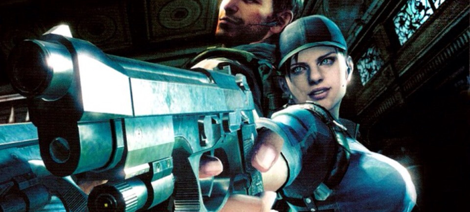

Jill Valentine
In the early 1990s, Valentine served in the United States Army and got the attention of recruiters for Delta Force, the nation's primary counter-terrorism unit. In spite of her sex, Valentine was allowed to take part in the six-month intensive Operator Training Course, where she excelled in bomb disposal and lock picking and was known for her delicate though precise work, resilience, courage, and discernment amid the danger.
This experience made Valentine one of the only women in the world with Delta Force training. Some time in 1996, Valentine was recruited by Albert Wesker for the Special Tactics and Rescue Service (S.T.A.R.S.), an elite unit of Raccoon Police Department (RPD) that relied on military veterans and weapons-trained scientists to solve serious crimes in Raccoon City, having only joined the unit due to their strong commitment to justice and desire to "experience the true feeling of life".
Despite keeping her special forces training and personal life a secret, she made friends with several S.T.A.R.S. members during this time, amongst them being Chris Redfield with whom she developed a close friendship and partnership, often being trained by him in marksmanship. By July 1998, Valentine became the only woman to join Captain Wesker's Alpha Team; her function in the team was cited as a B&E specialist, and in manoeuvres was positioned at the rear of the team with S.T.A.R.S. helicopter pilot Brad Vickers.